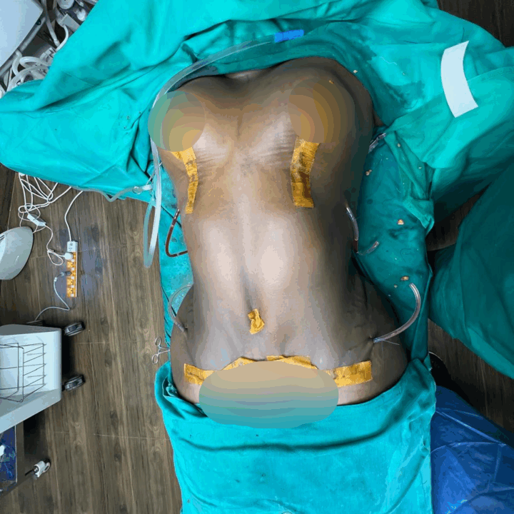
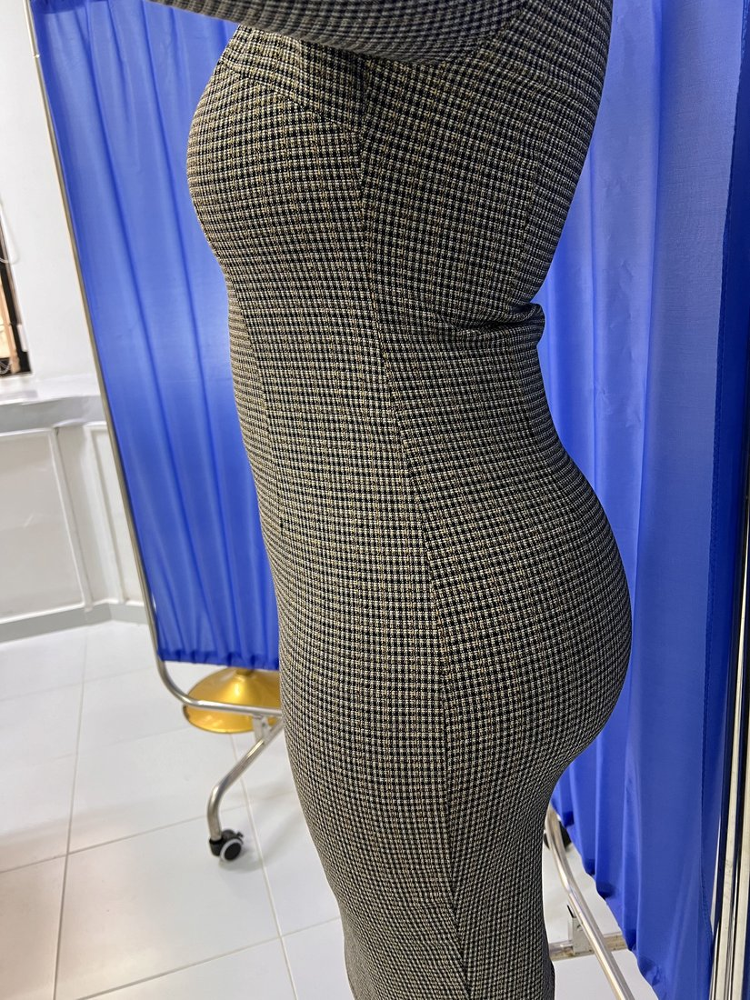
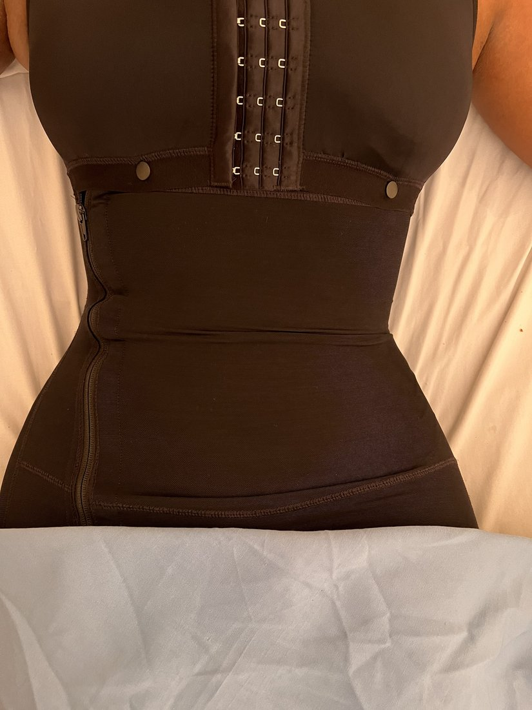
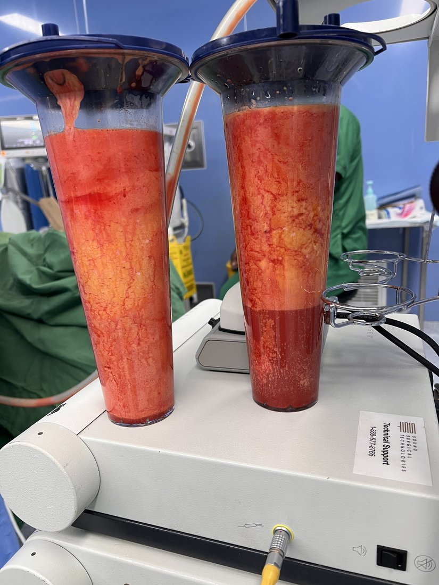
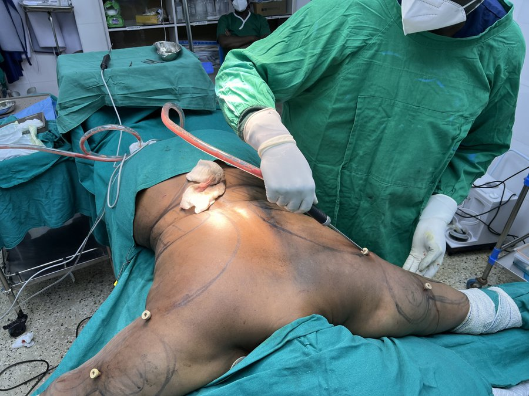

Flatten and firm your abdomen by removing excess skin and tightening the underlying muscles.
Procedure Overview
Abdominoplasty, commonly known as a tummy tuck, is a surgical procedure that removes excess skin and fat from the middle and lower abdomen while simultaneously tightening the abdominal wall muscles. It is designed for patients who have experienced significant abdominal changes due to pregnancy, major weight loss, or the natural effects of ageing - and who have not been able to restore abdominal tone through diet and exercise alone.
Dr. Matwa performs both the full abdominoplasty and the mini tummy tuck depending on individual anatomy and goals. A full abdominoplasty addresses the entire abdominal area from the lower chest to the pubic region, involves repositioning of the umbilicus, and repairs diastasis recti (separation of the rectus abdominis muscles). A mini tummy tuck is reserved for patients with minor skin laxity confined to the area below the navel, requiring a shorter incision and no umbilical repositioning.
The procedure is tailored individually - no two abdomens are alike. Dr. Matwa's pre-operative assessment determines which technique will produce the most proportionate, natural-looking, and lasting result for each patient's specific anatomy.
Schedule a Consultation
Why Patients Choose This Procedure
Surgical removal of excess skin produces a smooth, flat abdominal contour that no amount of diet or exercise can achieve once significant skin laxity has developed.
Rectus muscle plication corrects the separation of abdominal muscles that commonly occurs during pregnancy, restoring core strength and a narrower waist.
Redundant, hanging abdominal skin - which can cause rashes, hygiene issues, and emotional distress - is permanently excised during the procedure.
Many stretch marks in the lower abdomen are contained within the excised skin panel and are removed as part of the procedure, improving the appearance of the remaining skin.
Tightening the abdominal wall muscles supports the lumbar spine more effectively, which can improve posture and reduce lower back pain associated with weakened core muscles.
Patients consistently report a significant improvement in self-image and confidence after abdominoplasty - particularly those who have struggled with post-pregnancy or post-weight-loss changes for years.
How It Works
Dr. Matwa assesses skin laxity, abdominal muscle integrity, fat distribution, and overall health to determine whether a full abdominoplasty, mini tummy tuck, or extended technique is most appropriate. Surgical markings, incision placement, and umbilical position are planned in detail.
The procedure is performed under general anaesthesia. A low horizontal incision is made - positioned to be hidden below the underwear line - extending from hip to hip. For a full abdominoplasty, a second incision is made around the umbilicus to free it from the surrounding skin.
The abdominal skin is elevated from the underlying fascia. The rectus abdominis muscles are plicated with permanent sutures to repair diastasis and create a tighter, stronger abdominal wall. The elevated skin flap is then stretched downward, the excess is excised, and the belly button is brought through a new opening.
The incision is closed in multiple layers to minimise tension and optimise scar quality. Surgical drains are placed if indicated. A compression garment is fitted before the patient is transferred to the recovery room to begin their monitored post-operative care.
Founder & Lead Plastic Surgeon · KMPDC Licensed
Patient Results
Real results from Dr. Matwa's patients at Truffel Healthcare Kilimani. Individual results vary.




Results shown are real patients of Dr. Matwa Christopher. Individual outcomes depend on anatomy, skin quality, and post-operative care. Photos used with patient consent.
What to Expect
Patients rest in an elevated position with hips slightly flexed to reduce tension on the lower incision. Pain is managed with prescribed analgesia. Drains, if placed, are monitored and output recorded.
Short walks encouraged from day 2 to reduce clot risk. Drains typically removed at the first follow-up. Compression garment worn continuously. Patients walk with a slight stoop initially - this resolves within days.
Light desk-based work is possible. Swelling continues to reduce. Sutures are absorbed or removed at the two-week visit. Avoid lifting objects over 4kg. Scar management begins with silicone gel.
Exercise resumes - starting with walking, progressing to core work as advised. The final abdominal contour is visible as swelling fully resolves. Scar continues to mature and fade over 12-18 months.
Common Questions
Schedule a private consultation with Dr. Matwa Christopher to determine which abdominoplasty technique is right for your anatomy and goals.
We are bringing world-class reconstructive care to Truffel Healthcare Kilimani. Stay tuned for updates.
Get notified →